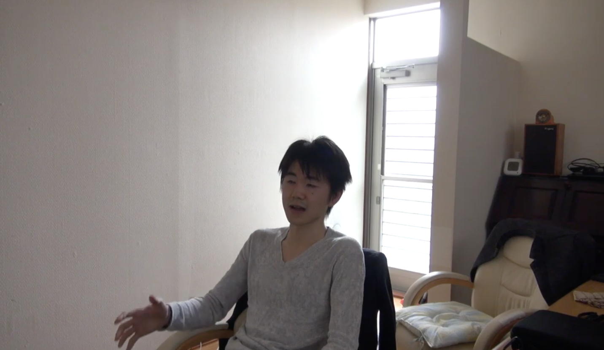

最先端技術と革新的アイデアで次々と新製品を発表していくMNR（マインドネットワークレヴォリューション）社。 今回はそんな会社の社長である原口広樹さんに「drone-alexa」開発の経緯、会社の思想、今後の展望について語っていただきました。
みみず： まず始めに、今回開発された「drone-alexa」とは一体どのような製品なのでしょうか？
原口さん： 「drone-alexa」は、ドローンに音声識別機能を取り込んだAIアシスタントです。 最近、AIアシスタントが流行っていますよね。GoogleやAmazonなど名だたる大企業が精力を尽くしている状況です。 私は、最初にAlexaやAmazon Echoを見たとき、違和感を感じてしまったんですね。 たしかに私達の声や発言に応答してくれるのは、手作業からの解放という意味では画期的でしたが、 "彼ら"をAIアシスタントと呼ぶには私の中でなにかが足りませんでした。 そして気づいたのです。"彼ら"は動いていなかったのです。 そもそも、アシスト(assist)の語源は「そばに(as)立つ(sist)」です。 しかし彼らは私がどこに行ったとしても、その場から動かないのです。このようなアシスタントがありえるでしょうか。いや、ありえない。 私は本当のアシスタントとは何かというのを知らしめたくなりました。本当の、"そばに立つ"AIアシスタントの誕生です。
みみず： なるほど。動くのが本当のAIアシスタントだ！という思いから本製品が作られたのですね。 私は売れるもの、役に立つものであれば、どのような形でもいいと思ってしまうのですが、実際に動かないことでなにかデメリットがあったのでしょうか？
原口さん： あなたの言うこともわかります。 わざわざ動かさなくても、既存のAIアシスタントのように通信で解決すればよいのではないか、ということですよね。 たしかにその方が効率的です。皆さん、効率が良い方が好きですよね。効率を追い求めた結果が今の世の中です。 結果的には効率を原因とする格差があり、目に見えるものだけが優先されます。 目に見えることはわかりやすく、わかりやすいことは理解の効率に繋がるからです。 皆さんは物事を理解しようとします。なぜなら知っていた方が今後の人生において効率が良いからです。 効率、効率、全て効率です。キリスト教のような一神教を批判する方々も効率という一神を信仰しているようです。

原口さん： おっと、話が逸れてしまいましたね（笑）。 私は新たな価値を作り出すことがイノベーションの本質だと理解しています。 つまり、私達は効率という根本的な価値以外の価値を生み出そうとしているのです。 皆さんもおそらく効率を追い求める日々に飽きているのではないでしょうか。もう頭打ちなのです。時代は変わりました。 では、私達が新しく生み出す価値とはなんなのか、ということになりますが、それは、「共存」です。別に色々な意味で捉えていただいて構いません。
みみず： ちょっとわからなくなってきたのですが（笑）、とりあえず「共存」というのは新しい価値なのでしょうか？ もともと共存という言葉はあるしそんなに新しくないんじゃないですかね...
原口さん： ここで言っている「共存」とはカッコつきの共存です。辞書で調べて出てくる共存とは意味が違います。 例えば政治の話で言うと、よりよい世界のために、昔から自由主義と社会主義がせめぎ合っています。 どちらかが理想の場合、どちらかの現実によりそれが阻害されているのです。 つまりは、自由と社会のどちらかを理想とするとき、私達はその理想に本質的な欠陥があることに気づいていないのです。 だからといって中庸を目指すのは一種の諦めです。そうなるとどちらも要求するという案が出てきますが、 それは理想の欠陥に気づかない限りは矛盾に遭遇することになるでしょう。 いい加減、アウフヘーベン（止揚）したほうが良いと思います。 「共存」とは、そのままの意味ですと共に存在するという意味です。 これを、自身が能動的に行う行為として捉えるのではなく、そもそもそのような状態である、という認識で捉えてください。 そもそも社会は自由であり自由は社会であると捉えるのです。 本質の部分において自由主義と社会主義はともに存在する概念と考えるのです。 それぞれの主義における理想の欠陥を受け入れ、それぞれの主義を共存している主義と受け入れることで論理的な解決が行われます。 では実践的、具体的な解決としてはどうなるかというと、それはどちらかの主義における理想を諦めることではないのです。 そもそもそれらは共存しているので諦めるという行為自体がなくなるのです。つまりは「共存している」ということを理解すればいいのです。 いろいろ言いましたが、要は言葉の過ちを認めるということです。 言葉とはdefinition(現実世界に区切りをつけること)であり、目に見えるものにするということなのです。 この言葉という発明自体に限界を認めるのです。 まずは機械との共存によってそれを理解していただこうという意向により今回の製品も作られたのですね。
みみず： え？動くAIアシスタントを作るという目的じゃなかったんですか？
原口さん： まあそれは先程いいました目的に対する手段でしかないですね（笑）。 目的のためなら手段を選ばない、というのはこういうことを言うんですかね〜。
みみず： とりあえず、先程おっしゃっていた自由主義とか社会主義の部分はよくわからなかったのですが、 私達の考え方が間違っているのでそれを正すための活動だという認識で良いでしょうか？
原口さん： はい。新しい「共存」という価値は、まず言葉で理解使用することの限界を理解してもらうところから始まります。 感覚の話なのです。 科学の話では量子力学という学問がありますが、どうやら真と偽が観測しない限りわからないのが量子だという話があるようです。 これは、論理上は真と偽が共存していると言えますね。 こういった事例からも、いろいろな物事が共存という価値に近づきつつあることをひしひしと感じますね。
みみず： 感覚の話と言われてしまうともはやインタビューが成り立たなくなってしまいます（笑）。 言葉や効率といったものの限界を知った先に、原口さんがおっしゃる「共存」という価値は現実社会にはどのような影響を与えるのでしょうか？
原口さん： まずは、皆さんを縛る柵（しがらみ）からの解放が始まるでしょう。 皆さんは言葉によって考え方を縛られています。 言葉をやめてありのままを受け入れていくことにより、自ずと世界自体が問題を問題とすることをやめると思います。 そうです。受け入れるのです。能動の時代から受容の時代に変わっているのです。 スピリチュアルの世界ではみずがめ座の時代と言われますね。 解放の時代であり、心のネットワークにおける一つのピアとなるのです。
みみず： なるほど。MNRさんの目指す心のネットワーク革命につながる第一歩というところでしょうか。 共存という価値がいろいろなところで始まっているという認識でいることがわかりました。
原口さん： 私の提唱する「共存」は「効率」という価値を超越すると信じています。 来たる心のネットワーク革命（MNR）に向けて私達は一度、価値という凝り固まった観念を打ち破る必要があります。 私が想定するに心のネットワーク時代には「価値」という概念はなくなっているでしょう。 私達MNRは、皆さんを縛り付けるこの「価値」という概念から解放し、意識のレベルを向上させて皆さんにMNRへの準備をしていただきます。
みみず： 心のネットワーク革命に向けての第1歩として、「drone-alexa」を開発したMNR社ですが、 今後はどのような取り組みをしていくのでしょうか？
原口さん： デリダじゃないですが、引き続き「脱効率」を図り、本質に理解していただくための機会を提供する製品を作っていこうと思います。 デリダといえば、MNRが行おうとしているのは差延へのまなざし自体に対する反省活動と言えるかもしれません。 私達はまなざしによって世界を認識しますが、その眼差しの行為自体に自らの誤解が含まれていることを反省するのです。 すみません。また話がそれましたね。新製品の詳細についてはあまり言えないのでこれ以上はちょっと...（笑）
みみず： そこをちょっとばかし教えていただ着たいのです！次の製品も実物などはあるのでしょうか。
原口さん： ありますね。今後はもののデザインからも脱効率を図る予定なので。デザインは効率を重視していますが、美術的な観点でそこを攻めます！
みみず： おお、脱効率のためであればどの領域にも手をのばすんですね。 是非頑張っていただいて心のネットワーク革命を実現していただきたいです。
本日はいろいろとお話していただきありがとうございました！
MNR社の皆さん